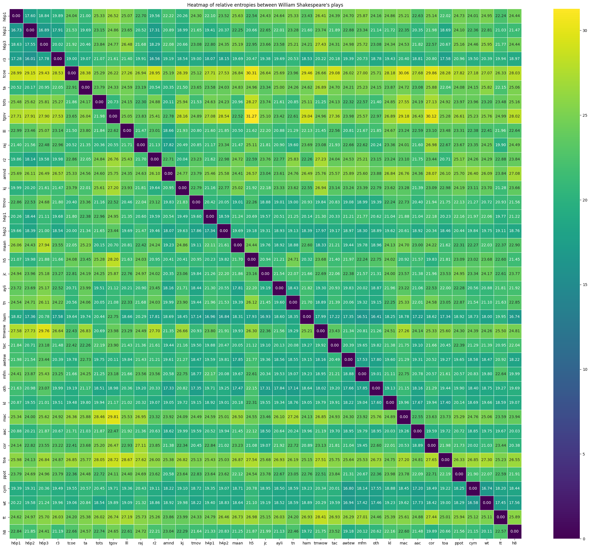

I am currently working on a digital history unessay project titled "Verifying the Authorship of William Shakespeare's Plays by Stylometry.(working title)"
This project involves natural language processing and word-adjacency network method to extract some meaningfull data from complete text data of William Shakespeare's plays.
The aim of the project is to compare and contrast similarity, differences of William Shakespeare's plays.
The main question of the project is: Was William Shakespeare able to write all 37 plays alone?
The main messages of the project are:
Authorship of William Shakespeare is an active area of research.
Previous studies did not make sufficient research on Shakespeare's plays, such as just analyzing the contributions of Shakespeare and other writers.
So, I wanted to find out how similar Shakespeare's plays were in writing style.
Below is a heatmap of relative entropies between William Shakespeare's plays:
